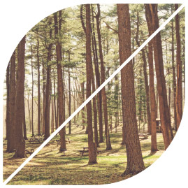
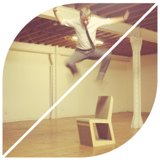
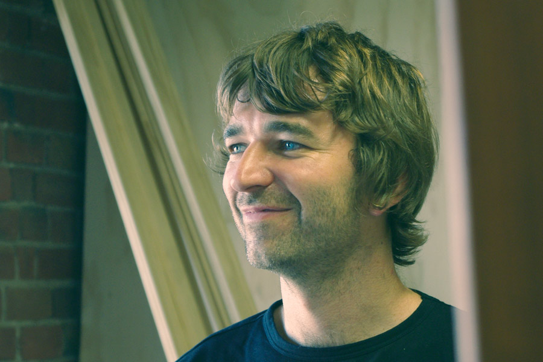

Tane is a forward thinking design-led furniture manufacturer based in Melbourne, Australia. We were formed through a strong desire to be part of a sustainable business producing products that don't compromise on design, quality or materials, but more importantly don’t detract from our environment.
Our over-arching goal is to do what we love... design & create and restore with minimum or no impact on our natural resources.

Environmental
Environmental concerns drive everything we do at Tane. Every decision we make, has due care and attention given to it, whether in our design thinking, choice of materials, to product after-life considerations.
Sourcing suppliers with a similar company ethos and genuine sustainable products can be very time consuming but also very rewarding. Our ‘Groove’ floor lamp is a great example, with material for the shade hand-printed on organic hemp fabrics in Melbourne. The bamboo frames are sourced from a Victorian importer of the material from a managed forest in China. CNC cut locally and assembled in the Tane factory, they are a great example of local design/manufacture and collaboration.
We openly admit that we are not perfect, there are still many elements of our business that can be improved on to make them more-earth friendly. But the fact is we have a strong desire to change and make change.

Team

Gary Pennington - Head Honcho
"The design process needs to start with environmental concerns over any other. From material choices to what happens to the product at the end of its life. Our challenge as designers and manufacturers is to produce products that not only 'make things better' during their life-span but somehow enhance our landscape once their useful life is over."Gary Pennington
A hands-on designer/maker, Gary Pennington prides himself on being involved in every aspect of the design process from concept through to production. Now based in Melbourne Australia, he is the founder and self-titled 'Head Honcho' of Tane.
Pennington is a multi-award winning designer in both the disciplines of furniture and lighting design. His design career started at Allermuir UK, a design-led contemporary furniture manufacturer. He progressed over a period of seven years to become Senior Designer, managing the design team and working on varied furniture designs from internationally renowned designers.
Pennington emigrated to Australia in 2007, where he now lives and works, with his wife and two dogs, Walter and Stanley.
Holly Whinnerah - Marketing Director
Holly Whinnerah has forged a marketing career with some of the biggest names in the corporate sphere, including; Red Bull, Hallmark and Reebok. Holly brings drive, vision and vast experience to the role, ensuring the focus of the Tane brand to environmental concerns remains consistent in all aspects of the business.

Why Tane?
On a trip around New Zealand in 2003, Tane founder Gary Pennington came across Tane Mahuta a giant kauri tree in the Waipoua Forest of Northland Region and was instantly struck by the sheer size and significance of the tree within the forest. The name Tane comes from Maori mythology, its age is unknown but is estimated to be between 1,250 and 2,500 years. It is the largest kauri known to stand today. The trees Maori name means "Lord of the Forest".
Many many years later and many many many varied design experiences, Tane Furniture Design was formed. As predicted by Pennington the name is a great fit for the business with a design ethos for a design-led furniture manufacturer with an ethos to take the traditional materials used in furniture making and change them for more sustainable options. We are not claiming to be 'Gods of the forest' but are trying to do our bit!
You can read the Maori story of Tane Mahuta, the seperator of heaven and earth below.
Tane Mahuta Mythology
From Te Kore (the great void where nothing existed) and Te Po (the perpetual night of darkness) comes the Maori story of creation.
In this darkness, imprisoned between their parents who were locked in a never-ending embrace, lived the children of the gods - Ranginui 'sky father' and Papatuanuku 'earth mother'. The love between Ranginui and Papatuanuku was so immense that they could not bear to be apart. Yet, by clinging to each other, the parents were also keeping their six children from the light.
Tane Mahuta's Triumph (2007) by Jane Crisp
That was until one day when, as Ranginui stirred, a single beam of light shone from Papatuanuku's armpit onto her children. Amazed by this radiance, the children yearned to free themselves and enter the world of light.
So the children began to work on breaking the embrace that had kept their universe dark for so long. But their parents' love was strong and their efforts were fruitless. Then the mighty Tane Mahuta (god of the forest) lay on his back and dug his shoulders deep into his mother's body. With his legs, Tane pushed against his father and, with all the strength he could summon, attempted to let light into the world.
Ignoring his mother's cries to stop, Tane pushed even harder and the bond between his parents began to tear. Drawing on his very last reserves, Tane fully extended his powerful legs, forcing Ranginui to the heavens and flooding the world with bright light.
Today, when Ranginui's tears fall from the sky as rain onto his beloved Papatuanuku, it is a reminder of his grief and longing for her. Papatuanuku's pain is visible in the red ochre clays of the earth, still stained by the blood drawn during the separation.